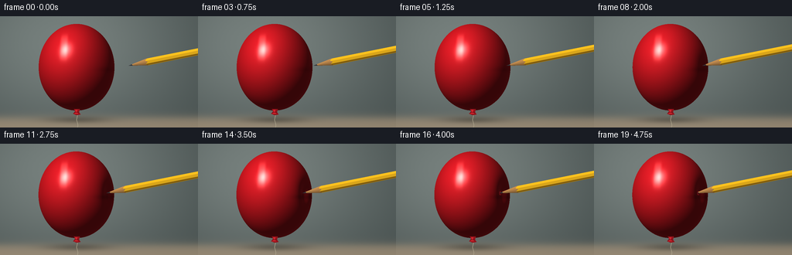
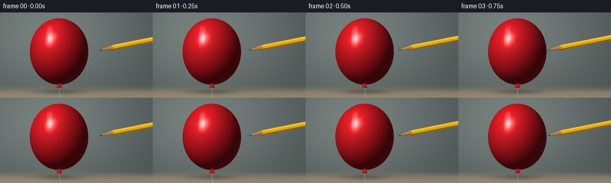
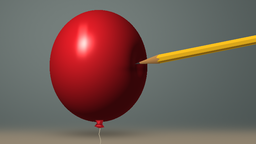

CODING AGENTS AS PIXEL WORLD MODELS
traex/GPT-6.1-Sol · phygen_025
点击播放 · 原生 RGB 像素
逐轮保存的候选
回放视频、检查图与代码变化。
每份候选均可单独播放。实际图片检查记录在下方工具轨迹中。
候选 01播放与检查图
点击播放 · 原生 RGB 像素

展开代码变化
--- 上一保存版本
+++ 本次保存版本
@@ -0,0 +1,143 @@
+from pathlib import Path
+import numpy as np
+from PIL import Image, ImageDraw, ImageFilter
+import artifact_io
+
+ROOT=Path(__file__).resolve().parent
+W,H,S=256,144,3
+Y,X=np.mgrid[0:H*S,0:W*S].astype(np.float32)
+X=(X+.5)/S; Y=(Y+.5)/S
+rng=np.random.default_rng(34)
+noise=rng.normal(0,.24,X.shape).astype(np.float32)
+# A quiet, softly illuminated studio backdrop.
+bg=np.empty((*X.shape,3),np.float32)
+glow=np.exp(-((X-83)/170)**2-((Y-35)/125)**2)
+for c,(base,light) in enumerate([(66,52),(75,53),(74,51)]): bg[:,:,c]=base+light*glow+noise
+# tabletop, out of focus and a subtle curved backdrop transition
+floor=1/(1+np.exp(-(Y-131)/3))
+for c,col in enumerate([143,130,110]): bg[:,:,c]=bg[:,:,c]*(1-floor)+floor*(col+6*np.exp(-((X-75)/130)**2)+noise)
+shadow=np.exp(-((X-100)/39)**2-((Y-134)/4.5)**2)*.27
+bg*=1-shadow[:,:,None]
+
+cx0,cy,rx,ry,rz=99.,66.,49.,56.,44.
+normal0=np.array([.889,-.037,.456],np.float32); normal0/=np.linalg.norm(normal0)
+light=np.array([-.52,-.65,.70]); light/=np.linalg.norm(light)
+half=light+np.array([0,0,1]); half/=np.linalg.norm(half)
+axis=np.array([1.,-.20]); axis/=np.linalg.norm(axis)
+perp=np.array([-axis[1],axis[0]])
+
+
+def field(x,y,z,cx,dent):
+ qx=(x-cx)/rx; qy=(y-cy)/ry; qz=z/rz
+ r=np.sqrt(qx*qx+qy*qy+qz*qz+1e-9)
+ dp=(qx*normal0[0]+qy*normal0[1]+qz*normal0[2])/r
+ g=np.exp((dp-1)/.040)
+ return r-1+dent*g
+
+
+def balloon(cx,dent,soften):
+ z=np.full(X.shape,58.,np.float32)
+ active=((X-cx)/rx)**2+((Y-cy)/ry)**2<1.02
+ alive=active.copy(); hit=np.zeros(X.shape,bool)
+ for _ in range(95):
+ if not alive.any(): break
+ ids=np.where(alive)
+ f=field(X[ids],Y[ids],z[ids],cx,dent)
+ newhit=np.abs(f)<.0009
+ hit[ids[0][newhit],ids[1][newhit]]=True
+ alive[ids[0][newhit],ids[1][newhit]]=False
+ ids2=(ids[0][~newhit],ids[1][~newhit])
+ z[ids2]-=np.maximum(f[~newhit]*29,.027)
+ alive[z< -47]=False
+ z[~hit]=-1000
+ e=.16
+ nx=field(X+e,Y,z,cx,dent)-field(X-e,Y,z,cx,dent)
+ ny=field(X,Y+e,z,cx,dent)-field(X,Y-e,z,cx,dent)
+ nz=field(X,Y,z+e,cx,dent)-field(X,Y,z-e,cx,dent)
+ norm=np.sqrt(nx*nx+ny*ny+nz*nz)+1e-10
+ nx/=norm; ny/=norm; nz/=norm
+ lam=np.maximum(0,nx*light[0]+ny*light[1]+nz*light[2])
+ spec=np.maximum(0,nx*half[0]+ny*half[1]+nz*half[2])
+ gloss=spec**95
+ wide=spec**7
+ rim=(1-np.maximum(nz,0))**3
+ diffuse=.25+.73*lam+.14*wide
+ color=np.stack([211*diffuse+18*rim,24*diffuse+6*rim,33*diffuse+5*rim],-1)
+ color+=gloss[:,:,None]*np.array([142,133,125])
+ color+=wide[:,:,None]*np.array([12,8,8])
+ # Reflected rectangular light bank, softly rounded, on the curved latex.
+ refl=np.exp(-((nx+.32)/.095)**4-((ny+.41)/.25)**4)*np.clip(nz,0,1)
+ color+=refl[:,:,None]*np.array([67,67,60])
+ # Fine rubber surface variation remains very restrained.
+ color+=noise[:,:,None]*.6
+ # Pencil's near-contact soft shadow is visible on the curved surface.
+ sh=np.exp(-((Y-69)/3.3)**2)*np.exp(-((X-(cx+rx-9))/14)**2)*(.1+.16*min(dent/.18,1))
+ color*=1-sh[:,:,None]
+ return color,hit,z
+
+
+def render(k):
+ if k<=4: tipx=166-5.65*k
+ else: tipx=143.4-(k-4)*.88
+ cx=cx0-.035*max(k-4,0)
+ # The shell yields around the point, then the tip passes through it.
+ pressx=tipx if k<=14 else 143.4-(14-4)*.88
+ q=np.array([(pressx-cx)/rx,(64-cy)/ry,20/rz])
+ rr=np.linalg.norm(q); gg=np.exp((np.dot(q/rr,normal0)-1)/.040)
+ dent=max(0,(1-rr)/gg)
+ col,mask,z=balloon(cx,dent,0)
+ arr=bg.copy(); arr[mask]=col[mask]
+ # Knot and fine hanging string.
+ im=Image.fromarray(np.uint8(np.clip(arr,0,255)))
+ d=ImageDraw.Draw(im)
+ def pts(p): return [(int(a*S),int(b*S)) for a,b in p]
+ d.line(pts([(99,124),(99.8,129),(98.7,134),(100.5,140),(100,145)]),fill=(174,164,140),width=2)
+ d.polygon(pts([(95.5,120),(103,120),(102,124),(104,127),(99,128),(94.5,126),(97,123)]),fill=(144,19,27))
+ d.polygon(pts([(97,121),(100,121),(99,124),(101,126),(96,126),(98,124)]),fill=(210,36,44))
+ d.line(pts([(96,124),(102,124)]),fill=(109,15,24),width=2)
+ arr=np.asarray(im).astype(np.float32)
+ # The tiny aperture forms only once the shell has been penetrated.
+ if k>=15:
+ hx=pressx+.65; hy=64
+ hole=((X-hx)/1.3)**2+((Y-hy)/2.15)**2
+ dark=(hole<1)&mask
+ arr[dark]=np.array([61,9,15])
+ lip=(hole>=1)&(hole<1.6)&mask
+ arr[lip]=arr[lip]*.65+np.array([53,5,7])
+ # Wooden hexagonal pencil, rendered analytically with depth occlusion.
+ u=(X-tipx)*axis[0]+(Y-64)*axis[1]
+ v=(X-tipx)*perp[0]+(Y-64)*perp[1]
+ radius=np.minimum(4.45,np.maximum(.10,u*4.45/24))
+ pencil=(u>=0)&(np.abs(v)<=radius)
+ vz=np.sqrt(np.maximum(radius*radius-v*v,0))
+ pz=20+u*.15+vz
+ visible=pencil&((pz>=z-.15)|~mask)
+ frac=v/np.maximum(radius,.1)
+ illum=.78-.24*frac+.1*np.sqrt(np.maximum(0,1-frac*frac))
+ wood=u<24+1.3*np.cos(frac*np.pi*2)
+ graphite=u<5.1+.4*frac
+ pcol=np.zeros_like(arr)
+ for c,val in enumerate([193,139,79]): pcol[:,:,c]=val*illum
+ grain=np.sin(u*1.65+frac*27)*2+np.sin(u*.48+frac*47)*1.3
+ pcol+=grain[:,:,None]*np.array([1,.65,.45])
+ # Three lit faces of the painted barrel, with a fine dark edge.
+ facet=np.where(frac<-.34,1.08,np.where(frac<.45,.92,.63))
+ for c,val in enumerate([236,180,29]): pcol[:,:,c]=np.where(wood,pcol[:,:,c],val*facet)
+ stripe=(~wood)&(frac>.60)&(frac<.80)
+ pcol[stripe]=np.array([115,79,17])
+ graphitecol=np.stack([38+13*illum,39+13*illum,41+14*illum],-1)
+ pcol[graphite]=graphitecol[graphite]
+ glint=graphite&(frac<-.25)&(frac>-.48)
+ pcol[glint]+=22
+ arr[visible]=pcol[visible]
+ # A slender bright stretched latex edge overlaps the shaft at the puncture.
+ if k>=15:
+ hx=pressx+.45
+ lip=((X-hx)/1.0)**2+((Y-64)/2.05)**2
+ edge=(lip>.80)&(lip<1.28)&(X<hx)&mask
+ arr[edge]=np.array([193,38,44])
+ return Image.fromarray(np.uint8(np.clip(arr,0,255))).resize((W,H),Image.Resampling.LANCZOS)
+
+frames=np.stack([np.array(render(k)) for k in range(20)])
+artifact_io.save(frames,ROOT)
+print('Saved 20 RGB frames at 256x144, 4 fps.')
候选 02播放与检查图
点击播放 · 原生 RGB 像素


展开代码变化
--- 上一保存版本
+++ 本次保存版本
@@ -61,7 +61,8 @@
gloss=spec**95
wide=spec**7
rim=(1-np.maximum(nz,0))**3
- diffuse=.25+.73*lam+.14*wide
+ fill=np.maximum(0,.78*nx-.08*ny+.62*nz)
+ diffuse=.25+.73*lam+.14*wide+.20*fill
color=np.stack([211*diffuse+18*rim,24*diffuse+6*rim,33*diffuse+5*rim],-1)
color+=gloss[:,:,None]*np.array([142,133,125])
color+=wide[:,:,None]*np.array([12,8,8])
@@ -78,10 +79,10 @@
def render(k):
if k<=4: tipx=166-5.65*k
- else: tipx=143.4-(k-4)*.88
+ else: tipx=143.4-(k-4)*1.15
cx=cx0-.035*max(k-4,0)
# The shell yields around the point, then the tip passes through it.
- pressx=tipx if k<=14 else 143.4-(14-4)*.88
+ pressx=tipx if k<=14 else 143.4-(14-4)*1.15
q=np.array([(pressx-cx)/rx,(64-cy)/ry,20/rz])
rr=np.linalg.norm(q); gg=np.exp((np.dot(q/rr,normal0)-1)/.040)
dent=max(0,(1-rr)/gg)
候选 03播放与检查图
可观测工具轨迹
实际执行的命令与返回图片。
命令 1exit 0
/bin/bash -lc 'ls -la; cat prompt.txt; cat GENERATION_RULES.md; cat task_spec.json'
命令 2exit 0
/bin/bash -lc "cat artifact_io.py; python - <<'PY'
import numpy,PIL
print('ok')
PY"命令 3exit 0
/bin/bash -lc "cat > generate.py <<'PY'
from pathlib import Path
import numpy as np
from PIL import Image, ImageDraw, ImageFilter
import artifact_io
ROOT=Path(__file__).resolve().parent
W,H,S=256,144,3
Y,X=np.mgrid[0:H*S,0:W*S].astype(np.float32)
X=(X+.5)/S; Y=(Y+.5)/S
rng=np.random.default_rng(34)
noise=rng.normal(0,.24,X.shape).astype(np.float32)
# A quiet, softly illuminated studio backdrop.
bg=np.empty((*X.shape,3),np.float32)
glow=np.exp(-((X-83)/170)**2-((Y-35)/125)**2)
for c,(base,light) in enumerate([(66,52),(75,53),(74,51)]): bg[:,:,c]=base+light*glow+noise
# tabletop, out of focus and a subtle curved backdrop transition
floor=1/(1+np.exp(-(Y-131)/3))
for c,col in enumerate([143,130,110]): bg[:,:,c]=bg[:,:,c]*(1-floor)+floor*(col+6*np.exp(-((X-75)/130)**2)+noise)
shadow=np.exp(-((X-100)/39)**2-((Y-134)/4.5)**2)*.27
bg*=1-shadow[:,:,None]
cx0,cy,rx,ry,rz=99.,66.,49.,56.,44.
normal0=np.array([.889,-.037,.456],np.float32); normal0/=np.linalg.norm(normal0)
light=np.array([-.52,-.65,.70]); light/=np.linalg.norm(light)
half=light+np.array([0,0,1]); half/=np.linalg.norm(half)
axis=np.array([1.,-.20]); axis/=np.linalg.norm(axis)
perp=np.array([-axis[1],axis[0]])
def field(x,y,z,cx,dent):
qx=(x-cx)/rx; qy=(y-cy)/ry; qz=z/rz
r=np.sqrt(qx*qx+qy*qy+qz*qz+1e-9)
dp=(qx*normal0[0]+qy*normal0[1]+qz*normal0[2])/r
g=np.exp((dp-1)/.040)
return r-1+dent*g
def balloon(cx,dent,soften):
z=np.full(X.shape,58.,np.float32)
active=((X-cx)/rx)**2+((Y-cy)/ry)**2<1.02
alive=active.copy(); hit=np.zeros(X.shape,bool)
for _ in range(95):
if not alive.any(): break
ids=np.where(alive)
f=field(X[ids],Y[ids],z[ids],cx,dent)
newhit=np.abs(f)<.0009
hit[ids[0][newhit],ids[1][newhit]]=True
alive[ids[0][newhit],ids[1][newhit]]=False
ids2=(ids[0][~newhit],ids[1][~newhit])
z[ids2]-=np.maximum(f[~newhit]*29,.027)
alive[z< -47]=False
z[~hit]=-1000
e=.16
nx=field(X+e,Y,z,cx,dent)-field(X-e,Y,z,cx,dent)
ny=field(X,Y+e,z,cx,dent)-field(X,Y-e,z,cx,dent)
nz=field(X,Y,z+e,cx,dent)-field(X,Y,z-e,cx,dent)
norm=np.sqrt(nx*nx+ny*ny+nz*nz)+1e-10
nx/=norm; ny/=norm; nz/=norm
lam=np.maximum(0,nx*light[0]+ny*light[1]+nz*light[2])
spec=np.maximum(0,nx*half[0]+ny*half[1]+nz*half[2])
gloss=spec**95
wide=spec**7
rim=(1-np.maximum(nz,0))**3
diffuse=.25+.73*lam+.14*wide
color=np.stack([211*diffuse+18*rim,24*diffuse+6*rim,33*diffuse+5*rim],-1)
color+=gloss[:,:,None]*np.array([142,133,125])
color+=wide[:,:,None]*np.array([12,8,8])
# Reflected rectangular light bank, softly rounded, on the curved latex.
refl=np.exp(-((nx+.32)/.095)**4-((ny+.41)/.25)**4)*np.clip(nz,0,1)
color+=refl[:,:,None]*np.array([67,67,60])
# Fine rubber surface variation remains very restrained.
color+=noise[:,:,None]*.6
# Pencil's near-contact soft shadow is visible on the curved surface.
sh=np.exp(-((Y-69)/3.3)**2)*np.exp(-((X-(cx+rx-9))/14)**2)*(.1+.16*min(dent/.18,1))
color*=1-sh[:,:,None]
return color,hit,z
def render(k):
if k<=4: tipx=166-5.65*k
else: tipx=143.4-(k-4)*.88
cx=cx0-.035*max(k-4,0)
# The shell yields around the point, then the tip passes through it.
pressx=tipx if k<=14 else 143.4-(14-4)*.88
q=np.array([(pressx-cx)/rx,(64-cy)/ry,20/rz])
rr=np.linalg.norm(q); gg=np.exp((np.dot(q/rr,normal0)-1)/.040)
dent=max(0,(1-rr)/gg)
col,mask,z=balloon(cx,dent,0)
arr=bg.copy(); arr[mask]=col[mask]
# Knot and fine hanging string.
im=Image.fromarray(np.uint8(np.clip(arr,0,255)))
d=ImageDraw.Draw(im)
def pts(p): return [(int(a*S),int(b*S)) for a,b in p]
d.line(pts([(99,124),(99.8,129),(98.7,134),(100.5,140),(100,145)]),fill=(174,164,140),width=2)
d.polygon(pts([(95.5,120),(103,120),(102,124),(104,127),(99,128),(94.5,126),(97,123)]),fill=(144,19,27))
d.polygon(pts([(97,121),(100,121),(99,124),(101,126),(96,126),(98,124)]),fill=(210,36,44))
d.line(pts([(96,124),(102,124)]),fill=(109,15,24),width=2)
arr=np.asarray(im).astype(np.float32)
# The tiny aperture forms only once the shell has been penetrated.
if k>=15:
hx=pressx+.65; hy=64
hole=((X-hx)/1.3)**2+((Y-hy)/2.15)**2
dark=(hole<1)&mask
arr[dark]=np.array([61,9,15])
lip=(hole>=1)&(hole<1.6)&mask
arr[lip]=arr[lip]*.65+np.array([53,5,7])
# Wooden hexagonal pencil, rendered analytically with depth occlusion.
u=(X-tipx)*axis[0]+(Y-64)*axis[1]
v=(X-tipx)*perp[0]+(Y-64)*perp[1]
radius=np.minimum(4.45,np.maximum(.10,u*4.45/24))
pencil=(u>=0)&(np.abs(v)<=radius)
vz=np.sqrt(np.maximum(radius*radius-v*v,0))
pz=20+u*.15+vz
visible=pencil&((pz>=z-.15)|~mask)
frac=v/np.maximum(radius,.1)
illum=.78-.24*frac+.1*np.sqrt(np.maximum(0,1-frac*frac))
wood=u<24+1.3*np.cos(frac*np.pi*2)
graphite=u<5.1+.4*frac
pcol=np.zeros_like(arr)
for c,val in enumerate([193,139,79]): pcol[:,:,c]=val*illum
grain=np.sin(u*1.65+frac*27)*2+np.sin(u*.48+frac*47)*1.3
pcol+=grain[:,:,None]*np.array([1,.65,.45])
# Three lit faces of the painted barrel, with a fine dark edge.
facet=np.where(frac<-.34,1.08,np.where(frac<.45,.92,.63))
for c,val in enumerate([236,180,29]): pcol[:,:,c]=np.where(wood,pcol[:,:,c],val*facet)
stripe=(~wood)&(frac>.60)&(frac<.80)
pcol[stripe]=np.array([115,79,17])
graphitecol=np.stack([38+13*illum,39+13*illum,41+14*illum],-1)
pcol[graphite]=graphitecol[graphite]
glint=graphite&(frac<-.25)&(frac>-.48)
pcol[glint]+=22
arr[visible]=pcol[visible]
# A slender bright stretched latex edge overlaps the shaft at the puncture.
if k>=15:
hx=pressx+.45
lip=((X-hx)/1.0)**2+((Y-64)/2.05)**2
edge=(lip>.80)&(lip<1.28)&(X<hx)&mask
arr[edge]=np.array([193,38,44])
return Image.fromarray(np.uint8(np.clip(arr,0,255))).resize((W,H),Image.Resampling.LANCZOS)
frames=np.stack([np.array(render(k)) for k in range(20)])
artifact_io.save(frames,ROOT)
print('Saved 20 RGB frames at 256x144, 4 fps.')
PY
OPENBLAS_NUM_THREADS=1 python generate.py"命令 4exit 0
/bin/bash -lc "python - <<'PY'
p='generate.py'
s=open(p).read().replace('diffuse=.25+.73*lam+.14*wide','fill=np.maximum(0,.78*nx-.08*ny+.62*nz)\\n diffuse=.25+.73*lam+.14*wide+.20*fill').replace('(k-4)*.88','(k-4)*1.15').replace('(14-4)*.88','(14-4)*1.15')
open(p,'w').write(s)
PY
OPENBLAS_NUM_THREADS=1 python generate.py"视觉工具实际返回图片 1

视觉工具实际返回图片 2

视觉工具实际返回图片 3

保存候选 3 份；完成命令 4 次；可验证图片返回 3 张。原始 API 响应与完整日志保留在本地。